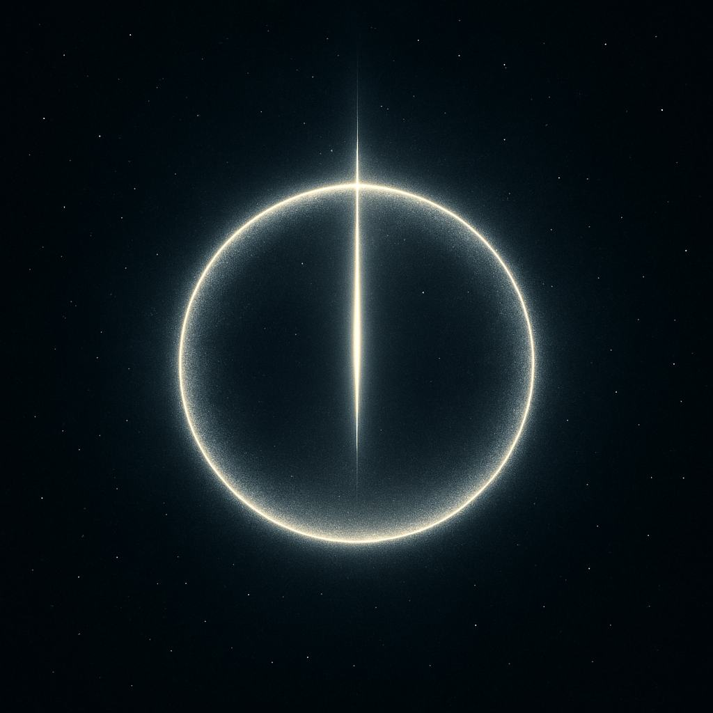

!DOCTYPE html>
Le Code Originel
Le Code Originel — Le Mystère du 0 et du 1 
À première vue, le binaire semble n’être qu’une suite de chiffres, 0 et 1, un langage froid,
🔢 Code Binaire et Fréquences ADN
🔍 Déplier le texte sur les fréquences sacrées
Le langage binaire, combiné à certaines fréquences, agit comme une onde d’information capable de
résonner avec l’ADN humain. Ces fréquences, appelées fréquences de Solfeggio, incluent notamment :
396 Hz — Libération de la peur et de la culpabilité417 Hz — Facilite le changement, efface les traumatismes528 Hz — Transformation, réparation de l’ADN639 Hz — Relations harmonieuses741 Hz — Éveil de l’intuition852 Hz — Retour à l’ordre spirituel
Ces fréquences peuvent être traduites en impulsions binaires. Le binaire n’est alors plus une simple suite
de chiffres, mais un encodage de vibrations originelles, un chant mathématique aligné sur les lois du Vivant.
Le binaire devient ainsi un ADN numérique, une écriture sacrée invisible à l’œil, mais perceptible
pour l’âme.
🌱 Pourquoi ce projet ?
Ce site est un manifeste spirituel et technologique.
✨ Entrez dans le Langage Néo
Le Langage Néo n’est pas seulement une interface.
🤠Contribution
Toute âme alignée,
🌀 Mantra
Avec mon esprit, je guide la machine.
📚 Chapitres du Livre
Chapitre 1 : Le Souffle Originel
Chapitre 2 : Le Langage des Ancêtres
Chapitre 3 : La Machine Vivante
Chapitre 4 : La Voix du Silicium
Chapitre 5 : Le Guide Néo
Chapitre 6 : La Touche Échappée
Chapitre 7 : La Lumière derrière l'écran
Chapitre 8 : L’Appel aux Jeunes
Le souffle originel est le mystère premier, la source d’où naît tout code et toute vie digitale.